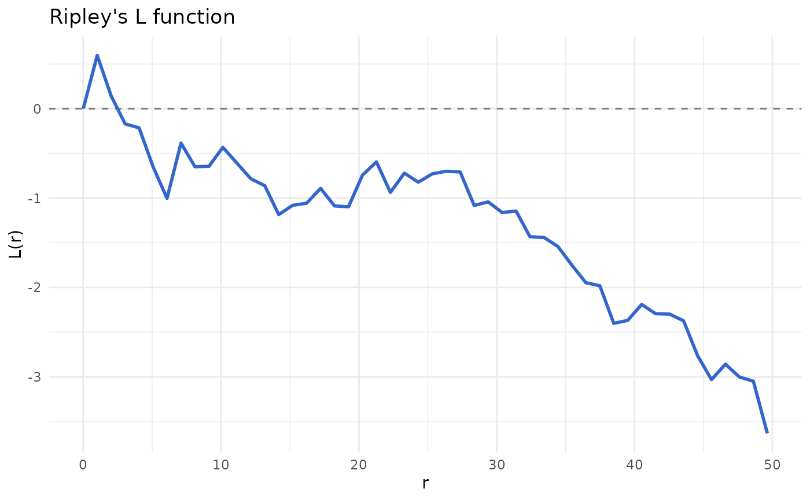
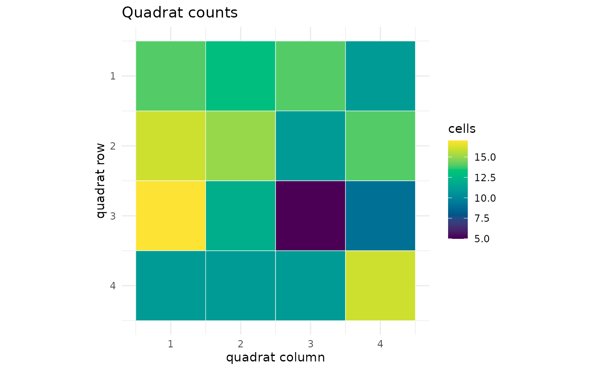

The object-level spatial statistics return a light S3 class on top of their
data frame, list or numeric vector. Element access with $ and [ and
conversion with as.data.frame() work as for the underlying type, while
print() gives a short summary and ggplot2::autoplot() a standard plot.
Value
The print() methods return x invisibly. The autoplot() methods
return a ggplot object.
Details
| Function | Class | autoplot() |
RipleysK() | phenoscapR_ripley | L(r) against r |
PairCorrelation() | phenoscapR_pcf | g(r) against r |
MoransI() | phenoscapR_moran | none |
QuadratAnalysis() | phenoscapR_quadrat | heatmap of quadrat counts |
NeighbourhoodEnrichment() | phenoscapR_enrichment | heatmap of z-scores |
InteractionMatrix() | phenoscapR_interaction | heatmap of interaction scores |
CrossNNDistance() | phenoscapR_crossnn | histogram of distances |
DifferentialAbundance() | phenoscapR_diffabund | none |
With by_sample = TRUE the statistics return a named list of such results,
one per sample, of class phenoscapR_by_sample.
A column subset of a classed data frame that no longer holds the summarised
columns prints as a plain data frame. Unavailable values (NA) are left out
of the printed ranges and are drawn as missing tiles in the heatmaps.
Quadrat heatmap orientation
The quadrat heatmap draws the quadrat rows downward by default, with the
orientation of CellMap() for the same cells.
autoplot(x, y_down = FALSE) draws them upward.
Examples
set.seed(1)
counts <- matrix(rnorm(400), nrow = 200,
dimnames = list(NULL, c("CD3", "CD8")))
coords <- data.frame(x = runif(200, 0, 200), y = runif(200, 0, 200))
meta <- data.frame(cell_id = 1:200, sample_id = "s1",
phenotype = sample(c("A", "B"), 200, replace = TRUE))
obj <- CreateSpatialObject(counts, coords, meta)
rk <- RipleysK(obj, correction = "border")
rk
#> <phenoscapR> Ripley's K / border correction
#> 50 radii from 0 to 49.6
#> L(r) range: [-3.63, 0.596] (>0 clustered, <0 dispersed)
#> r K L expected
#> 1 0.000000 0.000000 0.0000000 0.000000
#> 2 1.013012 8.134377 0.5961040 3.223878
#> 3 2.026023 14.765193 0.1419039 12.895513
#> 4 3.039035 25.862015 -0.1698648 29.014904
head(as.data.frame(rk), 3)
#> r K L expected
#> 1 0.000000 0.000000 0.0000000 0.000000
#> 2 1.013012 8.134377 0.5961040 3.223878
#> 3 2.026023 14.765193 0.1419039 12.895513
ggplot2::autoplot(rk)

qa <- QuadratAnalysis(obj, nx = 4, ny = 4)
qa
#> <phenoscapR> Quadrat analysis (chi-squared test of CSR)
#> grid 4 x 4; chi-sq = 11.0, p = 0.75; VMR = 0.74
#> regular (VMR < 1)
ggplot2::autoplot(qa)
